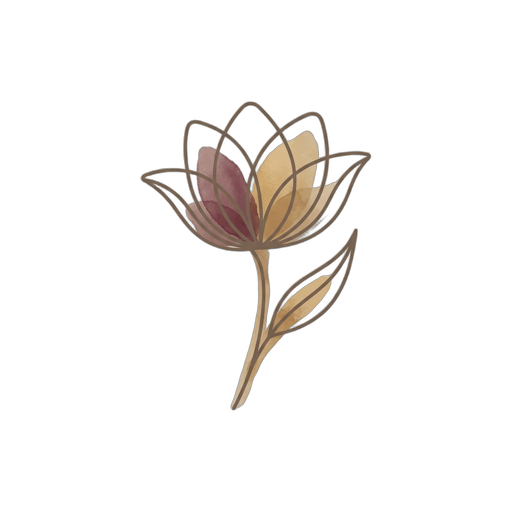

Daily guidance
Your day, with a little care
Start with how you feel and what you have recorded. Your suggestions come from those entries and the health context you choose.
Open my daily guidanceToday’s suggestions
You can review each suggestion’s source and the record behind it.
Your cycle is your own
The illustrated ring teaches a cycle example. Its day does not set your actual phase, hormone levels or exercise capacity. Daily guidance does not confirm ovulation or change your treatment.
Understand what your records can tell you